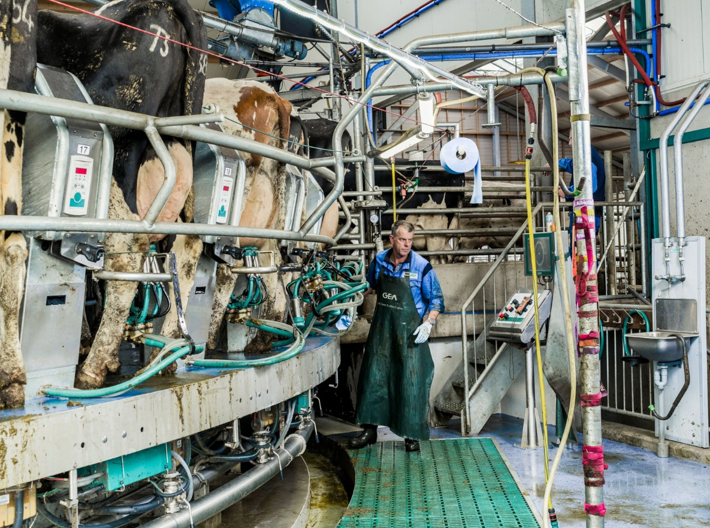

Beber leche de otro animal no es habitual en la naturaleza; de hecho, la mayoría de las personas son intolerantes a la lactosa. Entonces, ¿por qué empezaron a hacerlo los humanos hace unos 9000 años?
por MEGHAN MCCARRON
publicado 7 SEPT 2023, 11:50 GMT-3
Operario de ordeño en una granja lechera de los Países Bajos. Aunque los arqueólogos no saben exactamente por qué los humanos empezaron a beber leche de vaca (que no podían digerir), desde entonces se ha convertido en un alimento básico de la dieta moderna.
FOTOGRAFIA DE LUCA LOCATELLINAT GEO IMAGE COLLECTION
Helado. Mantequilla. Yogur. Queso. Un vaso alto y frío de leche. Los lácteos son una parte esencial de la dieta moderna. Pero, como sugiere el auge del helado de coco, la mantequilla de anacardos y el yogur de avena, aunque algunas personas decidan no tomar leche de vaca, muchas más simplemente no pueden digerirla bien. En la antigüedad, nuestros antepasados, como todos los mamíferos, no podían digerir la leche después de la infancia, e incluso hoy se calcula que el 68% de la población humana mundial es intolerante a la lactosa. Dicho esto, se podría decir que el verdadero misterio es por qué algunas personas beben leche. Hacerlo tiene muchos beneficios, sobre todo cuando escasean los alimentos. Los rebaños de ovejas, cabras y vacas son una fuente móvil y renovable de nutrición y líquido limpio y potable, capaz de prosperar en entornos en los que, de otro modo, el ser humano no podría. La leche puede consumirse fresca o procesada para conservarla durante meses, sino años (3500 años en el caso de la mantequilla de pantano). Además, si la experiencia humana moderna sirve de guía, sabe bastante bien. Aun así, beber leche en la edad adulta, por no hablar de la leche de otros animales, es un comportamiento extraño en el reino animal, y ha conllevado un buen número de efectos. Los científicos aún no han llegado al fondo de la cuestión. Esta investigación podría revelar nuevos conocimientos sobre nuestras culturas alimentarias, nuestros microbiomas e incluso nuestro ADN. (Relacionado: ¿Qué alimentos tienen calcio y por qué son importantes para la salud?) Cuándo empezó el ser humano a consumir leche animal Los primeros indicios de consumo de leche animal se remontan a hace casi 9000 años, en la actual Turquía, cerca del mar de Mármara, donde se han encontrado grasas lácteas en antiguos fragmentos de cerámica. Richard Evershed, biogeoquímico de la Universidad de Bristol (Reino Unido), sostiene que su equipo encontró indicios de leche incluso en las vasijas más antiguas. "Probablemente ordeñaban antes de que se inventaran las vasijas", afirma Evershed. En las primeras comunidades asentadas, como la protociudad de Çatalhöyük, en la Turquía actual, la leche formaba parte de una dieta variada. Jessica Hendy, arqueóloga de la Universidad de York (Reino Unido), señala que un cuenco que analizó en ese yacimiento de finales del Neolítico contenía restos de lácteos mezclados con residuos de semillas como la cebada. "Parecía que utilizaban la leche como parte de la comida, como hacemos hoy en día", cuenta. La leche parece haber sido un alimento básico para los antiguos pastores, un modo de vida móvil basado en rebaños de ovejas, cabras y vacas. Los investigadores que analizan la placa dental antigua han identificado individuos que consumían leche de cabra hace 6000 años en África oriental, donde el pastoreo ofrecía ventajas reales. "El Sáhara se estaba secando y, cuanto menos llueve, más impredecibles son las precipitaciones, por lo que tiene mucho más sentido trasladar a los animales adonde está la comida que esperar a que llegue a un lugar concreto", explica Fiona Marshall, arqueóloga y profesora emérita de la Universidad de Washington St (Estados Unidos). En las sociedades pastorales modernas, la leche sigue siendo esencial; en el norte de Kenia, los alimentos básicos de la dieta tradicional de los masai son la leche, la sangre de vaca y la carne.
un pequeno rio entre otras pequenas maravillas, sabes cuales son?
conoce como el cambio climatico esta cambiando en las zonas
ayuda las especie, unete a la causa
te invito a hacer conciencia de lo que haces en el mundo
A small river named Duden flows by their place and supplies it with the necessary
un explorador , capto maravillas en fotos , miralas.